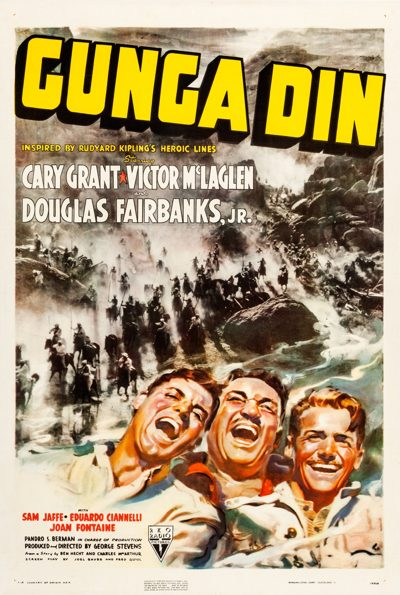

Gunga Din

Starring: Cary Grant, Victor McLaglen, Douglas Fairbanks Jr.
Director: George Stevens
Writer: Fred Guiol
Producer: George Stevens
Gunga Din is a 1939 American adventure film from RKO Radio Pictures directed by George Stevens and starring Cary Grant, Victor McLaglen, and Douglas Fairbanks Jr., loosely based on the 1890 poem of the same name by Rudyard Kipling combined with elements of his 1888 short story collection Soldiers Three.
Trivia
- Nominated for: Academy Award for Best Cinematography, Black-and-White.
- Based on Gunga Din (poem by Rudyard Kipling).
- The rights to Kipling's poem were bought by producer Edward Small's Reliance Pictures in 1936 for £4,700.
- RKO took the rights as part of a production deal with Small when he moved to the company.
- William Faulkner did some preliminary script work then the project was assigned to Howard Hawks.
Filming Locations
- California
- Arizona
- Alabama Hills
- A few interiors were made on sets at RKO Radio Pictures Hollywood sound stages, and one exterior scene filmed on the RKO Encino movie ranch.
Previous Showings
10 Runs • 5 Festivals
Original Billings: 1 run (February 26, 1939)
Original Run: February 26, 1939 (Sunday - Wednesday)
All runs on record (10):
- February 26, 1939 (Sunday - Wednesday)Cary Grant, Victor MacLaglen, Douglas Fairbanks Jr.
- January 6 - 7, 1990w/ Beau Geste (1939)
- July 31 - August 2, 1991w/ King Kong
- August 29 - September 1, 1992w/ Only Angels Have Wings
- August 16 - 19, 1997w/ Beau Geste (1939)
- March 22 - 28, 2002Cary Grant ~ The Complete Films, Part IIw/ Holiday
- May 8 - 11, 2010Spring 2010w/ Only Angels Have Wings
- April 24 - 26, 2015Cary Grant, plus Ernst Lubitsch and Rouben Mamoulianw/ The Devil and the Deep
- November 7 - 8, 201980 Years Ago in This Theatre: The Films of 1939w/ Jesse James
- July 20 - 21, 2023Summer 2023: The Best of Cary Grant and Alfred Hitchcockw/ Destination Tokyo